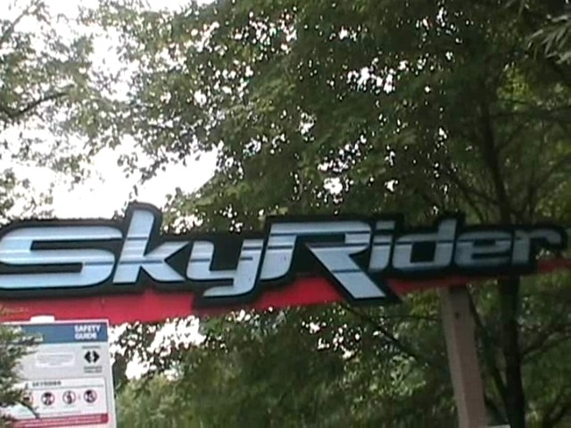

| |
Freestyle Review

This ride is now located at Cavallino Matto, a small park in Italy that I have never been to, and probably won't ever get to, simply due to not being very big and already having been on their star attraction (But hey. You never know). However, I last rode their star attraction, Freestyle, back when it was Skyrider at Canada's Wonderland. So that's what we'll be reviewing this ride as. You straddle the seat to a comfortable setting, get the restraint right, and then we're off! We then began climbing the lifthill. There, we got a very good view of trees, then we crest the lifthill and start to turnaround. There, we got a really nice view of Vortex. Then we headed straight into the first drop. The first drop was actually really fun and gives us a nice amount of speed. Then we head straight into the loop. The loop is actually really fun and has quite a bit of forces on it. So far, nothing bad has happened yet. But we keep thinking to ourselves, "This is a Togo Stand Up. It's gonna start beating the crap out of us sooner or later." Oh, and look what's coming up. An airtime hill!!! The airtime is really fun, and once again, it does not hurt your nuts in any way, once again, proving that the myth of "Stand Up Airtime will hurt your balls" is complete bullsh*t. But look!!! There's a big downward helix that we're about to head through!!! That'll surely beat the crap out of you!! Nope!!! Now granted, this helix is a little bit shakey, but there's no headbanging or any sort of pain of any kind. And look, after that fun helix, we get to go through another airtime hill!!! And that means more stand up airtime!!! =) Now the airtime is MUCH weaker than on Cobra, but dammit! It's still stand up airtime and it's still awesome. After travelling through that, it appears that the ride is about to go through some straight track. But instead, it appears to go through some bizzare straight track. We at Incrediblecoasters have no idea why it is here or what the point is, but at least it makes this ride bizzarley unique. We then head through some strange upward turnaround with no headbanging. We then dip back down and go through some microscopic bunny hops that are so small that you can't get airtime. Then you go straight into the brake run. And yes. You just read everything right. The Togo Stand Up Coaster was a fun ride. Not making this up. It was far from the best ride ever or even the best ride in Canada's Wonderland, but I had fun on it. It had some speed, some nice forces in the loop, and was just an overall fun ride. It's a real shame that this was the first coaster that Canada's Wonderland decided to get rid of, especially when Wild Beast is an option. HELLO!!! One of the worst coasters ever just on the other side of the park!! Holding up a big sign that screams "BULLDOZE ME!!!". Can't believe they tore down the wrong coaster. But hey. At least it found a new home in Italy and all the Italians can now have fun on this ride.
7/10
Location: Cavallino Matto
Opened at Canada's Wonderland in 1985
Relocated to Cavallino Matto in 2015
Built by: Togo
Last Ridden: August 7, 2008
Skyrider Photos


Home
|